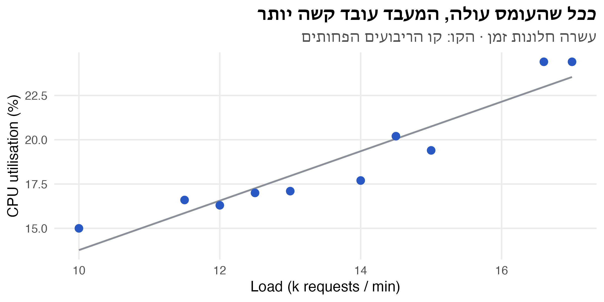
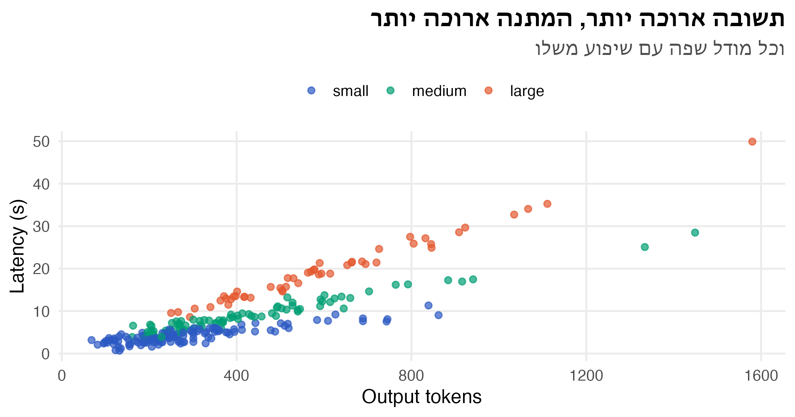
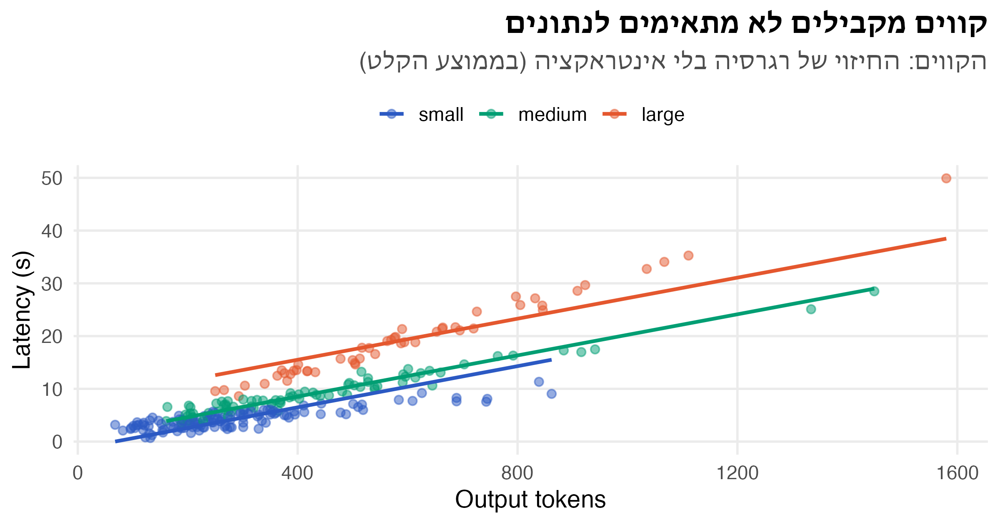
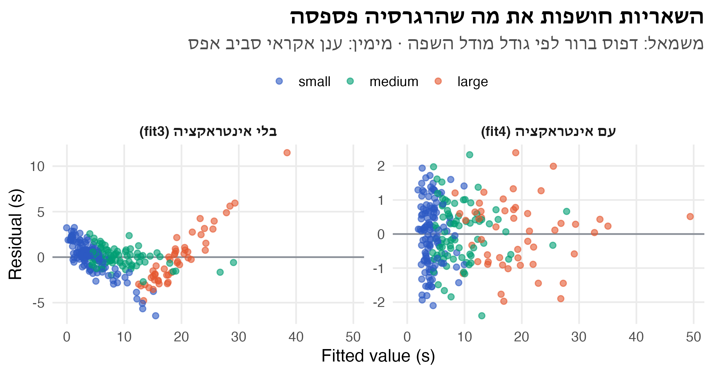
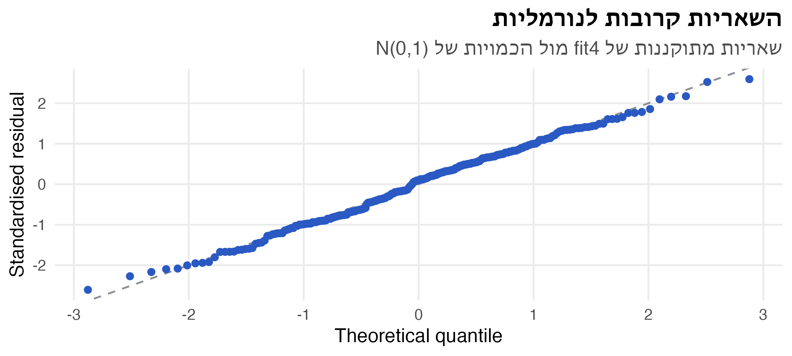
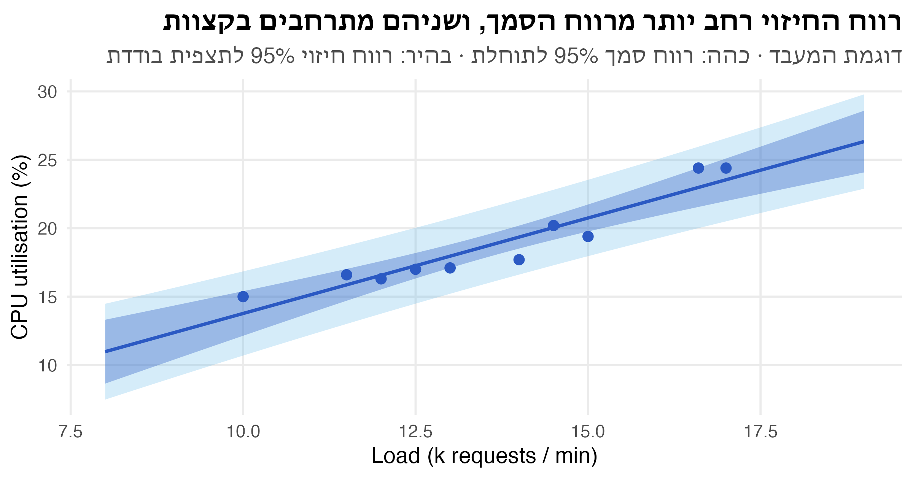

קוד
cpu = pd.DataFrame({
"load": [10, 11.5, 14.5, 12, 15, 16.6, 12.5, 13, 14, 17], # k requests / min
"util": [15, 16.6, 20.2, 16.3, 19.4, 24.4, 17, 17.1, 17.7, 24.4], # CPU %
})ניתוח נתונים סטטיסטי · הרצאה 3
ד״ר עדי שריד
23 באוקטובר 2026
צוות התשתיות מתכנן קיבולת (capacity planning) לשירות חדש. בעשרה חלונות זמן נמדדו העומס (אלפי בקשות בדקה) וניצולת המעבד (CPU, באחוזים).
השאלות: בכמה עולה ניצולת המעבד עם כל אלף בקשות נוספות בדקה? והאם הקשר הזה “אמיתי”, או שהוא יכול להיות מקרי?
b1, b0 = np.polyfit(cpu.load, cpu.util, 1)
xs = np.linspace(cpu.load.min(), cpu.load.max(), 50)
fig, ax = plt.subplots(figsize=(8, 4))
ax.plot(xs, b0 + b1 * xs, color=nanas_pal["grey"], linewidth=0.8)
ax.scatter(cpu.load, cpu.util, s=40, color=nanas_pal["primary"])
ax.set_title("ככל שהעומס עולה, המעבד עובד קשה יותר\nעשרה חלונות זמן · הקו: קו הריבועים הפחותים", loc="right")
ax.set_xlabel("Load (k requests / min)"); ax.set_ylabel("CPU utilisation (%)")
plt.close(fig)
show_original("03/cpu-plot-1.png")
\[ Y_i = \beta_0 + \beta_1 x_i + \varepsilon_i \qquad i = 1, \dots, n \]
ההנחות על השגיאות \(\varepsilon_i\):
מחפשים את הקו שממזער את סכום ריבועי הסטיות האנכיות:
\[ L(\beta_0, \beta_1) = \sum_{i=1}^{n} \left(y_i - \beta_0 - \beta_1 x_i\right)^2 \]
גוזרים לפי \(\beta_0\) ולפי \(\beta_1\) ומשווים לאפס (משוואות נורמליות), ומקבלים:
\[ \hat\beta_1 = \frac{S_{xy}}{S_{xx}} \qquad \hat\beta_0 = \bar y - \hat\beta_1 \bar x \]
\[ S_{xx} = \sum_{i=1}^{n} (x_i - \bar x)^2 = \sum x_i^2 - n\bar x^2 \qquad S_{xy} = \sum_{i=1}^{n} (x_i - \bar x)(y_i - \bar y) = \sum x_i y_i - n \bar x \bar y \]
למה דווקא ריבועים? יש קריטריונים אחרים. אפשר למזער את הסטייה המרבית (minimax), או את סכום הסטיות בערך מוחלט (least absolute deviations, שעמיד יותר לערכים חריגים). לריבועים הפחותים יש שלושה יתרונות. יש להם פתרון סגור. לפי משפט Gauss–Markov הם האומד הלינארי חסר ההטיה בעל השונות הקטנה ביותר, גם בלי הנחת נורמליות. וכשהשגיאות נורמליות, הם גם אומד הנראות המרבית.
n 10.000
x_bar 13.610
y_bar 18.810
Sxx 44.989
Sxy 62.799
Syy 97.909
dtype: float64\[ \hat\beta_1 = \frac{62.80}{44.99} = 1.396 \qquad \hat\beta_0 = 18.81 - 1.396 \cdot 13.61 = -0.188 \]
\[ SS_R = \hat\beta_1 S_{xy} = 87.66 \qquad SS_E = S_{yy} - SS_R = 97.91 - 87.66 = 10.25 \qquad \hat\sigma^2 = \frac{SS_E}{n-2} = 1.281 \]
\[ se(\hat\beta_1) = \sqrt{\frac{\hat\sigma^2}{S_{xx}}} = \sqrt{\frac{1.281}{44.99}} = 0.169 \qquad t = \frac{1.396}{0.169} = 8.27 \qquad R^2 = \frac{SS_R}{S_{yy}} = 0.895 \]
OLS Regression Results
==============================================================================
Dep. Variable: util R-squared: 0.895
Model: OLS Adj. R-squared: 0.882
Method: Least Squares F-statistic: 68.42
Date: Fri, 23 Oct 2026 Prob (F-statistic): 3.43e-05
Time: 14:10:04 Log-Likelihood: -14.313
No. Observations: 10 AIC: 32.63
Df Residuals: 8 BIC: 33.23
Df Model: 1
Covariance Type: nonrobust
==============================================================================
coef std err t P>|t| [0.025 0.975]
------------------------------------------------------------------------------
Intercept -0.1879 2.324 -0.081 0.938 -5.548 5.172
load 1.3959 0.169 8.272 0.000 1.007 1.785
==============================================================================
Omnibus: 1.150 Durbin-Watson: 1.923
Prob(Omnibus): 0.563 Jarque-Bera (JB): 0.696
Skew: -0.186 Prob(JB): 0.706
Kurtosis: 1.762 Cond. No. 89.9
==============================================================================
Notes:
[1] Standard Errors assume that the covariance matrix of the errors is correctly specified.Estimate: המקדמים. כל אלף בקשות נוספות בדקה מעלות את ניצולת המעבד ב-1.4 נקודות אחוז בממוצעStd. Error: שגיאת התקן של כל מקדם, \(se(\hat\beta_j)\)t value ו-Pr(>|t|): מבחן \(H_0: \beta_j = 0\), עם \(t = \hat\beta_j / se(\hat\beta_j)\) ו-\(n - 2 = 8\) דרגות חופש. לשיפוע \(p = 0.00003\), ולכן דוחים: הקשר לא מקריResidual standard error: \(\hat\sigma = \sqrt{MS_E} = 1.13\). זו הסטייה הטיפוסית של תצפית מהקו, ביחידות של \(Y\)Multiple R-squared: 89.5% מהשונות בניצולת המעבד מוסברים על ידי העומסF-statistic: מבחן לכל המודל. ברגרסיה פשוטה \(F = t^2\): \(8.27^2 = 68.4\)לשאול את הכיתה: למה החותך לא מובהק, ולמה שגיאת התקן שלו כל כך גדולה (2.3)? זה מוביל לשקף הבא.
החותך הוא הניצולת הצפויה כש-\(x = 0\), הרחק מטווח הנתונים (10 עד 17). לכן השונות שלו גדולה:
\[ V(\hat\beta_0) = \sigma^2 \left[\frac{1}{n} + \frac{\bar x^2}{S_{xx}}\right] \]
אם מחסירים מ-\(x\) את הממוצע שלו, \(\bar x = 0\), והחותך הופך ל-\(\bar y\): הניצולת הצפויה בעומס הממוצע.
| coef | std err | t | P>|t| | [0.025 | 0.975] | |
|---|---|---|---|---|---|---|
| Intercept | 18.8100 | 0.358 | 52.551 | 0.000 | 17.985 | 19.635 |
| load_c | 1.3959 | 0.169 | 8.272 | 0.000 | 1.007 | 1.785 |
\[ \underbrace{\sum_{i}(y_i - \bar y)^2}_{SS_T} = \underbrace{\sum_{i}(\hat y_i - \bar y)^2}_{SS_R} + \underbrace{\sum_{i}(y_i - \hat y_i)^2}_{SS_E} \]
| מקור | סכום ריבועים | דרגות חופש | ממוצע ריבועים | \(F\) |
|---|---|---|---|---|
| רגרסיה | \(SS_R\) | \(1\) | \(MS_R = SS_R / 1\) | \(MS_R / MS_E\) |
| שגיאה | \(SS_E\) | \(n - 2\) | \(MS_E = SS_E / (n-2)\) | |
| סך הכול | \(SS_T\) | \(n - 1\) |
| df | sum_sq | mean_sq | F | PR(>F) | |
|---|---|---|---|---|---|
| load | 1.0 | 87.6595 | 87.6595 | 68.4207 | 3.4310e-05 |
| Residual | 8.0 | 10.2495 | 1.2812 | NaN | NaN |
מקדם המתאם המרובה: \(R^2 = SS_R / SS_T = 87.66 / 97.91 = 0.895\)
שני הרכיבים אי-שליליים, ולכן תמיד \(0 \le R^2 \le 1\).
חברה משתמשת ב-API של מודל שפה, בשלושה גדלים: small, medium ו-large. המשתמשים מתלוננים על המתנה ארוכה.
השאלות:
הנתונים: 250 קריאות מהלוגים (נתונים מדומים). לכל קריאה: גודל מודל השפה, מספר הטוקנים בקלט ובפלט, מספר המסמכים שצורפו לפרומפט (RAG), השעה ביום, וזמן התגובה בשניות.
# Own RNG stream, so edits elsewhere in the lecture don't change this example.
# Note: numpy's RNG differs from R's, so exact simulated values differ from the
# R original, but the data-generating recipe (and so the statistical conclusions
# below) is identical.
rng = np.random.default_rng(303)
n_calls = 250
sizes = ["small", "medium", "large"]
median_output = {"small": 250, "medium": 350, "large": 500} # tokens
sec_per_token = {"small": 0.010, "medium": 0.018, "large": 0.030}
model = pd.Categorical(rng.choice(sizes, n_calls, p=[0.5, 0.3, 0.2]), categories=sizes)
rag_docs = rng.poisson(3, n_calls) # documents added to the prompt
input_tokens = np.round(300 + 550 * rag_docs + rng.lognormal(np.log(400), 0.6, n_calls))
output_tokens = np.round([rng.lognormal(np.log(median_output[m]), 0.5) for m in model])
hour = rng.integers(0, 24, n_calls)
llm = pd.DataFrame({
"model": model, "rag_docs": rag_docs, "input_tokens": input_tokens,
"output_tokens": output_tokens, "hour": hour,
})
sec_tok = llm.model.map(sec_per_token).astype(float)
llm["latency"] = np.round(0.8 + 0.25 * llm.input_tokens / 1000 +
sec_tok * llm.output_tokens + rng.normal(0, 1, n_calls), 2)
llm["input_k"] = llm.input_tokens / 1000
llm[["model", "input_tokens", "output_tokens", "rag_docs", "hour", "latency"]].head(4)| model | input_tokens | output_tokens | rag_docs | hour | latency | |
|---|---|---|---|---|---|---|
| 0 | small | 1931.0 | 189.0 | 2 | 23 | 2.78 |
| 1 | small | 3907.0 | 133.0 | 5 | 22 | 4.70 |
| 2 | large | 2758.0 | 553.0 | 4 | 11 | 17.73 |
| 3 | small | 2258.0 | 278.0 | 3 | 9 | 4.86 |
איך נבנו הנתונים. זמן התגובה מורכב מקבוע של 0.8 שניות (רשת ותור), מ-0.25 שניות לכל אלף טוקנים בקלט (קריאת הפרומפט, prefill), ומזמן לכל טוקן בפלט שתלוי בגודל מודל השפה: 10, 18 ו-30 מילישניות. למודל השפה הגדול יש גם תשובות ארוכות יותר. מספר המסמכים משפיע על זמן התגובה רק דרך מספר הטוקנים בקלט, והשעה ביום לא משפיעה בכלל. כשקוראים את התוצאות, כדאי לבדוק כמה מהם הרגרסיה מצליחה לשחזר.
fig, ax = plt.subplots(figsize=(8, 4.2))
for m, color in model_cols.items():
sub = llm[llm.model == m]
ax.scatter(sub.output_tokens, sub.latency, alpha=0.7, color=color, label=m)
ax.set_title("תשובה ארוכה יותר, המתנה ארוכה יותר\nוכל מודל שפה עם שיפוע משלו", loc="right")
ax.set_xlabel("Output tokens"); ax.set_ylabel("Latency (s)")
ax.legend()
plt.close(fig)
show_original("03/llm-plot-1.png")
\[ Y_i = \beta_0 + \beta_1 x_{i1} + \beta_2 x_{i2} + \dots + \beta_k x_{ik} + \varepsilon_i \qquad \varepsilon_i \sim N(0, \sigma^2) \]
נתחיל משני משתנים מסבירים: הטוקנים בקלט (באלפים) והטוקנים בפלט.
\[ \mathbf{y} = X\boldsymbol\beta + \boldsymbol\varepsilon \qquad X = \begin{pmatrix} 1 & x_{11} & \cdots & x_{1k} \\ \vdots & \vdots & & \vdots \\ 1 & x_{n1} & \cdots & x_{nk} \end{pmatrix}_{n \times (k+1)} \]
ממזערים את \(L(\boldsymbol\beta) = (\mathbf{y} - X\boldsymbol\beta)'(\mathbf{y} - X\boldsymbol\beta)\). הנגזרת היא \(-2X'\mathbf{y} + 2X'X\boldsymbol\beta\), ומשווים אותה לאפס:
\[ X'X\hat{\boldsymbol\beta} = X'\mathbf{y} \quad\Longrightarrow\quad \hat{\boldsymbol\beta} = (X'X)^{-1}X'\mathbf{y} \]
array([-2.44920495, 0.24828987, 0.02758599])הקשר לרגרסיה פשוטה. כש-\(k = 1\), המטריצה \(X'X\) היא \(\begin{pmatrix} n & \sum x_i \\ \sum x_i & \sum x_i^2 \end{pmatrix}\), ו-\(X'\mathbf{y} = \begin{pmatrix} \sum y_i \\ \sum x_i y_i \end{pmatrix}\). אלה בדיוק שתי המשוואות הנורמליות מקודם, ופתרונן נותן את \(\hat\beta_1 = S_{xy}/S_{xx}\).
\[ se(\hat\beta_j) = \sqrt{\hat\sigma^2 C_{jj}} \qquad t = \frac{\hat\beta_j}{se(\hat\beta_j)} \sim t_{n-k-1} \qquad \hat\beta_j \pm t_{1-\alpha/2,\, n-k-1} \cdot se(\hat\beta_j) \]
OLS Regression Results
==============================================================================
Dep. Variable: latency R-squared: 0.808
Model: OLS Adj. R-squared: 0.806
Method: Least Squares F-statistic: 518.9
Date: Fri, 23 Oct 2026 Prob (F-statistic): 3.58e-89
Time: 14:10:04 Log-Likelihood: -650.14
No. Observations: 250 AIC: 1306.
Df Residuals: 247 BIC: 1317.
Df Model: 2
Covariance Type: nonrobust
=================================================================================
coef std err t P>|t| [0.025 0.975]
---------------------------------------------------------------------------------
Intercept -2.4492 0.630 -3.890 0.000 -3.689 -1.209
input_k 0.2483 0.211 1.174 0.241 -0.168 0.665
output_tokens 0.0276 0.001 32.189 0.000 0.026 0.029
==============================================================================
Omnibus: 7.090 Durbin-Watson: 1.911
Prob(Omnibus): 0.029 Jarque-Bera (JB): 7.179
Skew: -0.326 Prob(JB): 0.0276
Kurtosis: 3.514 Cond. No. 1.37e+03
==============================================================================
Notes:
[1] Standard Errors assume that the covariance matrix of the errors is correctly specified.
[2] The condition number is large, 1.37e+03. This might indicate that there are
strong multicollinearity or other numerical problems.output_tokens = 0.0263: כל טוקן נוסף בתשובה מוסיף כ-26 מילישניות, כשמספר הטוקנים בקלט קבוע. \(t = 28\), מובהק מאודinput_k: לא מובהק (\(p = 0.75\)). האם הקלט באמת לא משפיע? נחזור לזהF-statistic: 396 on 2 and 247 DF: מבחן לכל המודל. \(k = 2\) ו-\(n - k - 1 = 247\)R-squared = 0.762: שני המשתנים יחד מסבירים 76% מהשונות בזמן התגובהResidual standard error = 3.56: קריאה טיפוסית רחוקה 3.6 שניות מהחיזוי. זה הרבה, כשהחציון הוא 6 שניותinput_k יוצא לא מובהק כי המודל עדיין שגוי: הוא מתעלם מגודל מודל השפה, וכל הרעש הזה נכנס לשגיאה ומסתיר את האפקט. אל תגלו להם עדיין, זה יתגלה בהמשך.
\[ H_0: \beta_1 = \beta_2 = \dots = \beta_k = 0 \qquad H_1: \text{לפחות מקדם אחד שונה מאפס} \]
| מקור | סכום ריבועים | דרגות חופש | ממוצע ריבועים | \(F\) |
|---|---|---|---|---|
| רגרסיה | \(SS_R\) | \(k\) | \(MS_R = SS_R / k\) | \(MS_R / MS_E\) |
| שגיאה | \(SS_E\) | \(n - k - 1\) | \(MS_E = SS_E / (n-k-1)\) | |
| סך הכול | \(SS_T\) | \(n - 1\) |
דוחים את \(H_0\) אם \(F > F_{1-\alpha;\, k,\, n-k-1}\).
\[ R^2 = \frac{SS_R}{SS_T} = 1 - \frac{SS_E}{SS_T} \qquad R^2_{adj} = 1 - \frac{SS_E / (n - k - 1)}{SS_T / (n - 1)} = 1 - (1 - R^2)\frac{n - 1}{n - k - 1} \]
rng_n = np.random.default_rng(8)
llm_noise = llm.assign(noise1=rng_n.standard_normal(len(llm)),
noise2=rng_n.standard_normal(len(llm)),
noise3=rng_n.standard_normal(len(llm)))
fit_noise = smf.ols("latency ~ input_k + output_tokens + noise1 + noise2 + noise3", data=llm_noise).fit()
pd.DataFrame({
"fit2": {"R2": fit2.rsquared, "adj": fit2.rsquared_adj},
"fit_noise": {"R2": fit_noise.rsquared, "adj": fit_noise.rsquared_adj},
}).T| R2 | adj | |
|---|---|---|
| fit2 | 0.8078 | 0.8062 |
| fit_noise | 0.8113 | 0.8075 |
שלושה משתני רעש העלו את \(R^2\), ו-\(R^2_{adj}\) ירד. אבל גם \(R^2_{adj}\) לא חסין: הוא עולה בכל פעם שמוסיפים משתנה שערך ה-\(|t|\) שלו גדול מ-1. למשתנה רעש זה קורה בערך בשליש מהמקרים. לכן \(R^2_{adj}\) מתאים להשוואה גסה בין מודלים, ולא כהוכחה שמשתנה שייך למודל.
פלט של רגרסיה עם \(n = 30\) תצפיות ו-\(k = 3\) משתנים מסבירים. חלק מהערכים נמחקו:
| מקור | סכום ריבועים | דרגות חופש | ממוצע ריבועים | \(F\) |
|---|---|---|---|---|
| רגרסיה | 600 | (א) | (ב) | (ג) |
| שגיאה | (ד) | (ה) | (ו) | |
| סך הכול | 860 | 29 |
השלימו את הטבלה, וחשבו את \(R^2\), את \(R^2_{adj}\) ואת \(\hat\sigma\). האם המודל מובהק ב-\(\alpha = 0.05\)? (\(F_{0.95;\,3,\,26} = 2.98\))
פתרון. (א) \(k = 3\). (ב) \(MS_R = 600/3 = 200\). (ד) \(SS_E = 860 - 600 = 260\). (ה) \(n - k - 1 = 26\). (ו) \(MS_E = 260/26 = 10\). (ג) \(F = 200/10 = 20 > 2.98\), ולכן המודל מובהק. \(R^2 = 600/860 = 0.698\), \(R^2_{adj} = 1 - \frac{10}{860/29} = 1 - \frac{10}{29.66} = 0.663\), ו-\(\hat\sigma = \sqrt{10} = 3.16\).
למשתנה קטגורי עם \(m\) רמות מוסיפים \(m - 1\) משתני דמה (אינדיקטורים). רמה אחת היא רמת הבסיס (reference level), ולה אין משתנה משלה.
\[ D_{medium} = \begin{cases} 1 & \text{medium} \\ 0 & \text{אחרת} \end{cases} \qquad D_{large} = \begin{cases} 1 & \text{large} \\ 0 & \text{אחרת} \end{cases} \]
\[ Y = \beta_0 + \beta_1 x_{input} + \beta_2 x_{output} + \beta_3 D_{medium} + \beta_4 D_{large} + \varepsilon \]
factor. רמת הבסיס היא הרמה הראשונה (levels)fit_raw = smf.ols("latency ~ model", data=llm).fit() # model only
fit3 = smf.ols("latency ~ input_k + output_tokens + model", data=llm).fit() # same length of answer
pd.DataFrame({
"raw": fit_raw.params[["model[T.medium]", "model[T.large]"]].to_numpy(),
"adjusted": fit3.params[["model[T.medium]", "model[T.large]"]].to_numpy(),
}, index=["modelmedium", "modellarge"])| raw | adjusted | |
|---|---|---|
| modelmedium | 3.8203 | 1.5585 |
| modellarge | 14.3363 | 7.6691 |
השאלה: האם גודל מודל השפה משפיע בכלל? זו השערה על שני מקדמים יחד, \(H_0: \beta_3 = \beta_4 = 0\). אי אפשר לענות עליה עם שני מבחני t נפרדים.
משווים בין המודל המלא (full) לבין המודל המצומצם (reduced), שבו \(H_0\) נכונה:
\[ F = \frac{(SS_E^{R} - SS_E^{F}) / q}{SS_E^{F} / (n - k - 1)} \sim F_{q,\; n-k-1} \]
\(q\) הוא מספר המקדמים שנבדקים, ו-\(k\) הוא מספר המשתנים במודל המלא.
RSS: סכום ריבועי השגיאות (\(SS_E\)) של כל מודל. משתני הדמה הורידו אותו מ-2656 ל-1025Df = 2: הוספנו \(q = 2\) מקדמים\[ F = \frac{(2656 - 1025) / 2}{1025 / 245} = 195 \]
ברגרסיה fit3 לכל מודל שפה יש חותך משלו, אבל אותו שיפוע: אותו זמן לכל טוקן בתשובה. זה סביר?
aug3 = llm.assign(fitted=fit3.fittedvalues)
fig, ax = plt.subplots(figsize=(8, 4.2))
for m, color in model_cols.items():
sub = aug3[aug3.model == m]
ax.scatter(sub.output_tokens, sub.latency, alpha=0.5, color=color)
b1, b0 = np.polyfit(sub.output_tokens, sub.fitted, 1)
xs = np.linspace(sub.output_tokens.min(), sub.output_tokens.max(), 30)
ax.plot(xs, b0 + b1 * xs, color=color, linewidth=1, label=m)
ax.set_title("קווים מקבילים לא מתאימים לנתונים\nהקווים: החיזוי של רגרסיה בלי אינטראקציה (בממוצע הקלט)", loc="right")
ax.set_xlabel("Output tokens"); ax.set_ylabel("Latency (s)")
ax.legend()
plt.close(fig)
show_original("03/parallel-lines-1.png")
אינטראקציה פירושה שההשפעה של משתנה אחד תלויה בערך של משתנה אחר. כאן: הזמן לכל טוקן תלוי בגודל מודל השפה.
\[ Y = \beta_0 + \beta_1 x_{in} + \beta_2 x_{out} + \beta_3 D_{med} + \beta_4 D_{lrg} + \beta_5\, x_{out} D_{med} + \beta_6\, x_{out} D_{lrg} + \varepsilon \]
| מודל שפה | השיפוע של \(x_{out}\) |
|---|---|
| small | \(\beta_2\) |
| medium | \(\beta_2 + \beta_5\) |
| large | \(\beta_2 + \beta_6\) |
ב-R, output_tokens * model הוא קיצור של output_tokens + model + output_tokens:model.
OLS Regression Results
==============================================================================
Dep. Variable: latency R-squared: 0.981
Model: OLS Adj. R-squared: 0.981
Method: Least Squares F-statistic: 2141.
Date: Fri, 23 Oct 2026 Prob (F-statistic): 3.23e-207
Time: 14:10:04 Log-Likelihood: -357.96
No. Observations: 250 AIC: 729.9
Df Residuals: 243 BIC: 754.6
Df Model: 6
Covariance Type: nonrobust
=================================================================================================
coef std err t P>|t| [0.025 0.975]
-------------------------------------------------------------------------------------------------
Intercept 0.9205 0.262 3.516 0.001 0.405 1.436
model[T.medium] 0.2355 0.323 0.730 0.466 -0.400 0.871
model[T.large] 0.0478 0.349 0.137 0.891 -0.640 0.735
input_k 0.2404 0.066 3.623 0.000 0.110 0.371
output_tokens 0.0100 0.001 15.035 0.000 0.009 0.011
output_tokens:model[T.medium] 0.0068 0.001 7.687 0.000 0.005 0.009
output_tokens:model[T.large] 0.0196 0.001 24.833 0.000 0.018 0.021
==============================================================================
Omnibus: 1.522 Durbin-Watson: 2.071
Prob(Omnibus): 0.467 Jarque-Bera (JB): 1.254
Skew: -0.161 Prob(JB): 0.534
Kurtosis: 3.131 Cond. No. 3.32e+03
==============================================================================
Notes:
[1] Standard Errors assume that the covariance matrix of the errors is correctly specified.
[2] The condition number is large, 3.32e+03. This might indicate that there are
strong multicollinearity or other numerical problems.input_k מובהק עכשיו: np.float64(0.24) שניות לכל אלף טוקנים בקלט. במודלים הקודמים הוא “הוסתר” בגלל שגיאה גדולה (\(\hat\sigma = 3.6\)). עכשיו \(\hat\sigma = np.float64(1.03)\)modelmedium, modellarge לא מובהקים, אבל לא מוחקים אותם. כשיש אינטראקציה, הם ההפרש בין מודלי השפה כשאורך התשובה אפס, ולא “ההשפעה של גודל מודל השפה”fig, axes = plt.subplots(1, 2, figsize=(10, 4.2))
for ax, fit, title in [(axes[0], fit3, "בלי אינטראקציה (fit3)"), (axes[1], fit4, "עם אינטראקציה (fit4)")]:
ax.axhline(0, color=nanas_pal["grey"])
for m, color in model_cols.items():
mask = (llm.model == m).to_numpy()
ax.scatter(fit.fittedvalues[mask], fit.resid[mask], alpha=0.6, color=color, label=m)
ax.set_title(title)
ax.set_xlabel("Fitted value (s)")
axes[0].set_ylabel("Residual (s)")
axes[1].legend()
fig.suptitle("השאריות חושפות את מה שהרגרסיה פספסה\nמשמאל: דפוס ברור לפי גודל מודל השפה · מימין: ענן אקראי סביב אפס")
plt.close(fig)
show_original("03/resid-plot-1.png")
| מה רואים | מה זה אומר | מה עושים |
|---|---|---|
| ענן אקראי סביב אפס | ההנחות סבירות | |
| עקומה (קשת) | הקשר לא לינארי | מוסיפים \(x^2\), טרנספורמציה ל-\(x\) |
| משפך: הפיזור גדל עם \(\hat y\) | השונות לא קבועה | טרנספורמציה ל-\(Y\) (למשל \(\log Y\)) |
| קבוצות עם דפוסים שונים | חסר משתנה או אינטראקציה | מוסיפים אותם למודל |
| נקודה בודדת רחוקה | ערך חריג | בודקים אותו. לא מוחקים אוטומטית |
ועוד שתי בדיקות:
stat_qq()). עם מדגם גדול, סטיות קטנות לא מזיקות למבחניםstd_resid = fit4.get_influence().resid_studentized_internal
fig, ax = plt.subplots(figsize=(8, 3.6))
sm.qqplot(std_resid, line="45", ax=ax, color=nanas_pal["primary"])
ax.set_title("השאריות קרובות לנורמליות\nשאריות מתוקננות של fit4 מול הכמויות של N(0,1)", loc="right")
ax.set_xlabel("Theoretical quantile"); ax.set_ylabel("Standardised residual")
plt.close(fig)
show_original("03/qq-plot-1.png")
גרף Q-Q הוא בדיקה בעין. אפשר גם לבדוק את הנורמליות במבחן, עם מבחן KS מההרצאה על שיטות א-פרמטריות:
\[ H_0: \text{השאריות המתוקננות מתפלגות } N(0, 1) \qquad D = \max_x \left| F_n(x) - \Phi(x) \right| \]
D = 0.0284173, p-value = 0.984258shapiro.test()מספר המסמכים מ-RAG קובע כמעט לגמרי את מספר הטוקנים בקלט: המתאם ביניהם הוא np.float64(0.96). מה קורה כשמכניסים את שניהם?
| Estimate | Std. Error | |
|---|---|---|
| fit4 | 0.2404 | 0.0663 |
| fit5 | 0.0667 | 0.2504 |
input_k גדלה פי np.float64(3.8). הרגרסיה לא יכולה להפריד בין שני משתנים שזזים יחדמדד VIF (Variance Inflation Factor): \(R_j^2\) הוא ה-\(R^2\) של רגרסיה של \(x_j\) על כל שאר המשתנים המסבירים.
\[ VIF_j = \frac{1}{1 - R_j^2} \]
np.float64(14.256956489455758)ה-VIF הוא בדיוק הפקטור שבו השונות של \(\hat\beta_j\) גדלה, לעומת מצב שבו \(x_j\) לא מתואם עם שאר המשתנים. החבילה car מחשבת אותו לכל המשתנים בבת אחת (car::vif()). כאן חישבנו אותו ידנית כדי לראות מאיפה הוא מגיע. מה עושים? משאירים רק אחד מהמשתנים המתואמים, זה שקרוב יותר למנגנון. כאן הטוקנים בקלט הם מה שהשרת מעבד בפועל, והמסמכים משפיעים רק דרכם.
קריטריונים נפוצים: \(R^2_{adj}\), ה-p-value של מבחן F חלקי, או AIC (מדד שמאזן בין טיב ההתאמה למספר הפרמטרים. קטן יותר = טוב יותר)
# statsmodels has no built-in step(); a small bidirectional-by-AIC search, like R's step().
def stepwise_aic(data, response, all_terms, start_terms):
def fit_of(terms):
rhs = " + ".join(terms) if terms else "1"
return smf.ols(f"{response} ~ {rhs}", data=data).fit()
current = list(start_terms)
current_aic = fit_of(current).aic
improved = True
while improved:
improved = False
candidates = []
for t in all_terms:
if t not in current:
candidates.append(("add", t, current + [t]))
for t in current:
candidates.append(("drop", t, [x for x in current if x != t]))
best = None
for action, term, terms in candidates:
aic = fit_of(terms).aic
if best is None or aic < best[0]:
best = (aic, action, term, terms)
if best is not None and best[0] < current_aic:
current_aic, _, _, current = best
improved = True
return fit_of(current), current
all_terms = ["input_k", "rag_docs", "hour", "output_tokens", "C(model)", "output_tokens:C(model)"]
fit_step, step_terms = stepwise_aic(llm, "latency", all_terms, all_terms)
"latency ~ " + " + ".join(step_terms)'latency ~ rag_docs + output_tokens + output_tokens:C(model)'[['', 'coef', 'std err', 't', 'P>|t|', '[0.025', '0.975]'],
['Intercept',
' 1.1660',
' 0.178',
' 6.536',
' 0.000',
' 0.815',
' 1.517'],
['rag_docs',
' 0.1420',
' 0.039',
' 3.656',
' 0.000',
' 0.065',
' 0.218'],
['output_tokens',
' 0.0097',
' 0.001',
' 19.487',
' 0.000',
' 0.009',
' 0.011'],
['output_tokens:C(model)[T.medium]',
' 0.0074',
' 0.000',
' 17.360',
' 0.000',
' 0.007',
' 0.008'],
['output_tokens:C(model)[T.large]',
' 0.0198',
' 0.000',
' 45.707',
' 0.000',
' 0.019',
' 0.021']]hour נשאר במודל, אף שבסימולציה לשעה אין שום השפעה על זמן התגובה. ה-p-value שלו אפילו קרוב ל-0.05לנקודה חדשה \(\mathbf{x}_0 = (1, x_{01}, \dots, x_{0k})'\), החיזוי הוא \(\hat y_0 = \mathbf{x}_0'\hat{\boldsymbol\beta}\). יש שתי שאלות שונות:
\[ \text{CI:}\;\; \hat y_0 \pm t_{1-\alpha/2,\, n-k-1}\sqrt{\hat\sigma^2\, \mathbf{x}_0'(X'X)^{-1}\mathbf{x}_0} \qquad \text{PI:}\;\; \hat y_0 \pm t_{1-\alpha/2,\, n-k-1}\sqrt{\hat\sigma^2 \left(1 + \mathbf{x}_0'(X'X)^{-1}\mathbf{x}_0\right)} \]
ה-1 הנוסף ברווח החיזוי הוא השונות של התצפית החדשה עצמה. גם עם אינסוף נתונים הוא לא נעלם.
ברגרסיה פשוטה, \(\mathbf{x}_0'(X'X)^{-1}\mathbf{x}_0 = \dfrac{1}{n} + \dfrac{(x_0 - \bar x)^2}{S_{xx}}\): הרווחים צרים ביותר ב-\(\bar x\) ומתרחבים ככל שמתרחקים ממנו.
2,000 טוקנים בקלט, 500 בפלט, מודל השפה הגדול:
new_call = pd.DataFrame({"input_k": [2], "output_tokens": [500],
"model": pd.Categorical(["large"], categories=["small", "medium", "large"])})
pred = fit4.get_prediction(new_call)
conf = pred.conf_int(alpha=0.05)[0] # CI for the mean
pi = pred.conf_int(alpha=0.05, obs=True)[0] # PI for a single new observation
pd.DataFrame({"fit": [pred.predicted_mean[0]] * 2, "lwr": [conf[0], pi[0]], "upr": [conf[1], pi[1]]},
index=["confidence", "prediction"])| fit | lwr | upr | |
|---|---|---|---|
| confidence | 16.2605 | 15.9566 | 16.5644 |
| prediction | 16.2605 | 14.2139 | 18.3070 |
החישוב הידני של רווח הסמך, עם המטריצה \(X\) של fit4:
import patsy
X4 = fit4.model.exog
rhs = fit4.model.formula.split("~", 1)[1]
x0 = patsy.dmatrix(rhs, new_call, return_type="dataframe")[fit4.params.index].to_numpy()[0]
h0 = float(x0 @ np.linalg.inv(X4.T @ X4) @ x0) # x0' (X'X)^-1 x0
y0 = float(x0 @ fit4.params.to_numpy())
t_crit = stats.t.ppf(0.975, df=fit4.df_resid)
sigma_hat = np.sqrt(fit4.mse_resid)
pd.Series({
"fit": y0, "h0": h0,
"ci_half": t_crit * sigma_hat * np.sqrt(h0),
"pi_half": t_crit * sigma_hat * np.sqrt(1 + h0),
})fit 16.2605
h0 0.0225
ci_half 0.3039
pi_half 2.0466
dtype: float64\(h_0\) קטן מאוד (יש 250 תצפיות, והנקודה לא רחוקה מהן), ולכן רווח החיזוי נקבע כמעט כולו על ידי \(\hat\sigma\).
grid_cpu = pd.DataFrame({"load": np.arange(8, 19.01, 0.1)})
pred_cpu = fit_cpu.get_prediction(grid_cpu)
ci = pred_cpu.conf_int(alpha=0.05)
pi = pred_cpu.conf_int(alpha=0.05, obs=True)
fig, ax = plt.subplots(figsize=(8, 4.2))
ax.fill_between(grid_cpu.load, pi[:, 0], pi[:, 1], color=nanas_pal["sky"], alpha=0.25)
ax.fill_between(grid_cpu.load, ci[:, 0], ci[:, 1], color=nanas_pal["primary"], alpha=0.35)
ax.plot(grid_cpu.load, pred_cpu.predicted_mean, color=nanas_pal["primary"], linewidth=1)
ax.scatter(cpu.load, cpu.util, s=25)
ax.set_title("רווח החיזוי רחב יותר מרווח הסמך, ושניהם מתרחבים בקצוות\nדוגמת המעבד · כהה: רווח סמך 95% לתוחלת · בהיר: רווח חיזוי 95% לתצפית בודדת", loc="right")
ax.set_xlabel("Load (k requests / min)"); ax.set_ylabel("CPU utilisation (%)")
plt.close(fig)
show_original("03/ci-pi-plot-1.png")
input_k נראה חסר השפעה עד שהוספנו את גודל מודל השפה והאינטראקציה. תמיד מסתכלים על השאריות| השאלה | הכלי | ב-R |
|---|---|---|
| מה הקשר בין \(Y\) לכל משתנה, כשהשאר קבועים? | \(\hat{\boldsymbol\beta} = (X'X)^{-1}X'\mathbf{y}\) | lm(y ~ x1 + x2), summary() |
| האם משתנה בודד תורם? | מבחן t, \(t_{n-k-1}\) | summary() |
| האם המודל כולו מסביר משהו? | מבחן F, \(F_{k,\,n-k-1}\) | שורה אחרונה ב-summary() |
| האם קבוצת משתנים תורמת? | מבחן F חלקי, \(F_{q,\,n-k-1}\) | anova(reduced, full) |
| משתנה קטגורי עם \(m\) רמות | \(m - 1\) משתני דמה | factor |
| האם השיפוע תלוי בקבוצה? | אינטראקציה | x * group |
| האם ההנחות מתקיימות? | שאריות, Q-Q, VIF | augment(), stat_qq() |
| מה צפוי לתצפית חדשה? | רווח סמך / חיזוי | predict(interval = ) |